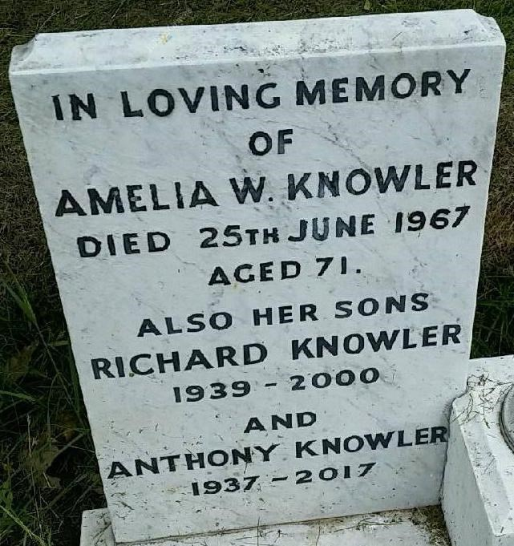
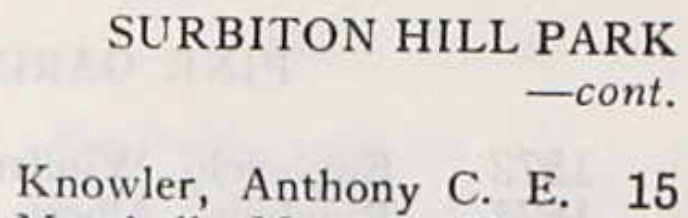
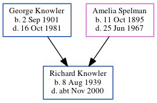

Anthony C E Knowler cAug 1937 - 2017
[ Home ] | [ Calendar ] | [ Surnames Index ] | [ Errors ] | [ Family History ]The child of George Knowler (a farm horseman) and Amelia Spelman, Anthony Knowler, the second cousin once-removed on the mother's side of Nigel Horne, was born in Thanet, Kent, England c. Aug 19371,2. About 1965, he was living at 15 Surbiton Hill Park, Surbiton, London, England4.
He died in 20172 and was buried on Hamilton Road Cemetery, 45 Hamilton Road, Deal, Kent, England c. 20173.
Parents
- George Thomas was born on 2 Sept 1901
- Amelia Winifred was born on 11 Oct 1895
Citations
- England & Wales births 1837-2006 - Findmypast
- England Billion Graves cemetery index - Findmypast
- https://billiongraves.com/grave/Anthony-Knowler/27756852
- London, England, Electoral Registers, 1832-1965 Ancestry.com Operations, Inc.
Media
Anthony Knowler - headstone

1965 Electoral Register

England Billion Graves cemetery index - US/BMD/BILLION/5/000027756850
England & Wales births 1837-2006 - BMD/B/1937/3/AZ/000684/065
England Billion Graves cemetery index - US/BMD/BILLION/5/000027756852
Family Tree
Map
Generated by ged2site. Last updated on Jul 3, 2024
Known Issues
Parent George is listed in the residence for 29 Sep 1939, but this child is not
Date of death is known, but not place